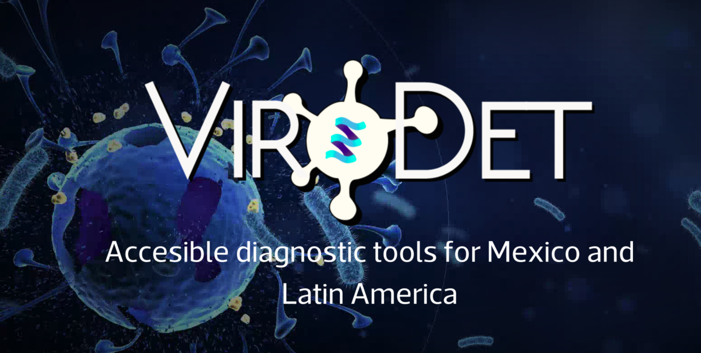
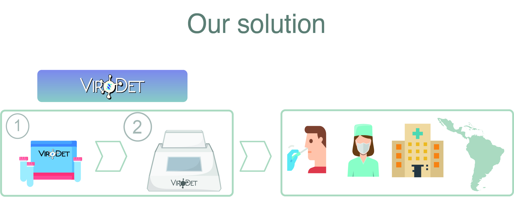

"ViroDet is an initiative backed by a group of young scientists and entrepreneurs united to fight the COVID-19 pandemic in Mexico and Latin America. Together, we are working on the development of accessible, open-source diagnostic kits made from mexican resources, with the goal of performing low-cost PCR tests to detect SARS-CoV-2".
Virodet
I am currently collaborating with other young mexican scientist in a project called VIRODET.
You can learn more about virodet in our webpage or read a summary below!
Virodet: https://www.virodet.com/

The COVID-19 pandemic has exposed a big underlying problem in Mexico and the Latin American (LATAM) region: a very low testing capacity and a general lack of affordable testing. Some of the reasons for this generalized issue are mainly due to a high dependency on foreign technology, high importation costs of the equipment and reagents needed, and a very time consuming and difficult importation process for biological reagents.
This has resulted in a situation where Mexico and other LATAM countries simply don’t have enough resources to properly monitor the outbreak, which has ultimately led to a high number of COVID-19 cases, and a high death toll in our countries.
Owing to this problem, we asked ourselves: if we have the resources and talent to make affordable and open diagnostic technology and kits, why not do it ourselves and help protect our communities? Why depend on foreign technology?
We are working to develop open, low-cost diagnostic tools (molecular reagents and equipment) that can be replicated and rapidly implemented for large scale and frequent testing. By achieving this we also aim to become a reference for other government-validated COVID-19 diagnostic tools being developed around the world.
We want this to be implemented in Mexico, the LATAM region and any other country that might need additional diagnostic testing capacity.
This can be useful for COVID-19 or any other infectious diseases that can be diagnosed with qPCR, it can minimize social and economic impact, and lower the dependence of foreign technology and empower communities to make their own affordable tests.